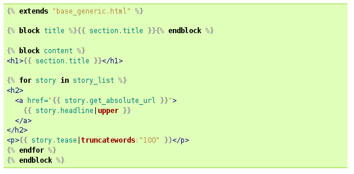

Introducción Django
Néstor Arocha Rodríguez
Colonymbus
Donde está django
- Ejecutado sobre un SO
- Servido desde un servidor web
- Interpretado en Python
- Debajo de sus aplicaciones
[any material that should appear in print but not on the slide]
Algún doctor de ROR en la sala?
- Misma finalidad
- Filosofia subyacente
- ¿Algún mago en la sala?
- Loose coupling
- DRY
- Baterias incluidas
El paradigma MVC
- Controlador
- Responde a eventos y selecciona vistas
- Modelo
- Forma y contenido de información
- Vista
- Presenta el contenido de los modelos de acuerdo a los requisitos del sistema
Tabla comparativa de terminos
| Django | RoR | PHP |
| Modelo | Modelo | Modelo | Programador |
| Vista | Vista+Plantilla | Controlador+Vista | fichero.php |
| Controlador | urls | enrutador | directorios |
La estructura de aplicaciones de django
- Raíz (sitio o multisitio)
- settings.py
- manage.py
- urls.py
- * Aplicación
- views.py
- models.py
- ? admin.py
- ? tests.py
- ? urls.py
Una sesión de prueba
- Crear un proyecto
- Crear una aplicación
- Crear una vista
- Ejecutar el servidor
- Disfrutar del contenido estático
Copypasta
- #Creamos un proyecto
- django-admin startproject granproyecto
- cd granproyecto
- $EDITOR settings.py #Configuración básica
- python manage.py runserver
- python manage.py startapp funcionalidad
- $EDITOR funcionalidad/views.py #Creamos una vista
- $EDITOR urls.py
- python manage.py runserver #servidor de pruebas
Copypasta (II)
#Contenido de la vista
from django.http import HttpResponse
def index(request):
return HttpResponse("malkovich malkovich malkovich")
Explicación de la sesión (I)
- El usuario solicita una URL a través de su navegador
- Busca la primera coincidencia en urls.py
- Ejecuta la vista asociada a la url con la petición
- La vista devuelve una respuesta
- El servidor web devuelve la respuesta al cliente
Explicación de la sesión (II)
Bloque II: Un repaso a los conceptos importantes
- Modelo
- Plantillas
- Vista
- urls.py (Controlador)
- formulario
Modelos
- Son clases de python
- Hay diferentes tipos de campos (Referencia)
- Tienen metodos de acceso all, filter, get (Referencia)
- Las relaciones entre modelos se realizan con unos campos especiales
- ForeignKeyField
- ManyToManyField
- OneToOneField
- Debajo hay un ORM propio de django (y reemplazable)
Modelos (II)
from django.db import models
from django.contrib.auth.models import User
# Create your models here.
class Servicio(models.Model):
name = models.CharField(max_length=50)
user = models.OneToOneField(User, editable = False)
description = models.CharField(max_length=300)
providerurl = models.URLField()
def __str__(self):
return self.name
Plantillas
- Formato propio
- Basado en bloques
- {{ variable }} {% codigo %}
- No permite ningún tipo de programación salvo:
- bucles
- condiciones
- filtros
- Se permite herencia de plantillas por sustitución de bloques
Plantillas (II)
{% extends "base.html" %}
{% block content %}
<h2>Añadir Servicio</h2>
<form method="post">{% csrf_token %}
{% for field in form %}
<div class="fieldWrapper">
{{ field.errors }}
{{ field.label_tag }}: {{ field }}
</div>
{% endfor %}
<input type="submit" value="Submit" />
</form>
{% endblock %}
Plantillas (III)

Vistas (I)
- Son una función de python
- Toda vista recibe un request y devuelve un response
- Pueden incluir modelos, formularios y en general cualquier código
- Familia de metodos de conveniencia alrededor de las vistas
Vistas (II)
def add(request):
from .models import Servicio
servicio = Servicio(name="cafeteria",description="Sirve refrescos", providerurl="http://vendo_espacio_publicidad.com")
servicio.save()
servicios = Servicio.objects.all()
return render_to_response("add.html", { 'servicios':servicios})
Controlador
- Es un listado de expresiones regulares
- Puedes incluir las urls de las aplicaciones
- Pueden incluir pasar parámetros a través de los grupos de la exp. regular
- Es evaluado por orden y en cortocircuito
Controlador (II)
from django.conf.urls import patterns, url, include
urlpatterns = patterns('',
(r'^articles/2003/$', 'news.views.special_case_2003'),
(r'^articles/(\d{4})/$', 'news.views.year_archive'),
(r'^articles/(\d{4})/(\d{2})/$', 'news.views.month_archive'),
(r'^articles/(\d{4})/(\d{2})/(\d+)/$', 'news.views.article_detail'),
)
Formularios
- Son clases de python
- Utilizan widgets para el dibujado y la interacción
- Proveen métodos para mostrar el contenido en la plantilla
- Proveen métodos para validar
- Vinculación con modelos
Formularios (II)
class UserForm(forms.Form):
fullname = forms.CharField()
email = forms.EmailField(label='email')
class UserForm(forms.ModelForm):
class Meta:
model = User
Bloque III Otra sesión de prueba
- Añadir un modelo
- Sincronizar la bbdd
- Crear un template
- Crear una vista con el template y el modelo
CopyPasta (I)
#funcionalidad/models.py
class Servicio(models.Model):
name = models.CharField(max_length=50)
description = models.CharField(max_length=300)
providerurl = models.URLField()
def __str__(self):
return self.name
CopyPasta (II)
#templates/add.html
{% load i18n %}
<!DOCTYPE html>
<html>
<head>
<meta charset="utf-8">
<title>Añadir servicio</title>
</head>
<body>
{% for servicio in servicios %}
<h1>{{ servicio }}</h1>
{{ servicio.name }}
{{ servicio.providerurl }}
{% endfor %}
</body>
</html>
CopyPasta (III)
#funcionalidad/views.py
from django.http import HttpResponse
from django.shortcuts import render_to_response
...
def add(request):
from .models import Servicio
servicio = Servicio(name="cafeteria",description="Sirve refrescos", providerurl="http://vendo_espacio.com)
servicio.save()
servicios = Servicio.objects.all()
return render_to_response("add.html", { 'servicios':servicios})
CopyPasta (IV)
#urls.py
url(r'^add/$', 'granproyecto.funcionalidad.views.add', name='add'),
#settings.py
TEMPLATE_DIRS = (
+ "/home/nesaro/proyectos/charla-django/code/granproyecto/templates/",
)
INSTALLED_APPS = (
+ 'funcionalidad',
)
Bloque IV: Las aplicaciones incluidas
- Filosofia baterias incluidas
- Ofrecen:
- modelos
- vistas
- formularios
- urls
- decoradores
- Referencia
La aplicación admin
- Permite administrar los modelos de las aplicaciones registradas
- Ajusta automáticamente todos los valores segun el tipo de Field
La aplicación auth
- Permite el uso de usuarios y sesiones
- Permite administrar los usuarios
- Incluye el decorador @login_required
Bloque V: Caracteristicas Avanzadas
- Vistas genericas
- Storages
- Middleware
Aplicaciones y complementos no incluidos
Bloque VI Sesión de pruebas
- Administrar el modelo
- Formularios
- Herencia de plantillas
- Vistas genéricas
CopyPasta (I)
#templates/base.html
{% load i18n %}
<!DOCTYPE html>
<html>
<head>
<meta charset="utf-8">
<title>{% block title %}{% endblock %}</title>
</head>
<body>
<div id="content"> {% block content %}{% endblock %} </div>
</body>
</html>
CopyPasta (II)
#templates/funcionalidad/servicio_list.html
{% extends "base.html" %}
{% block content %}
<h2>Servicios</h2>
<ul>
{% for servicio in object_list %}
<li>{{ servicio.name }}: <a href="{{ servicio.providerurl }}">{{ servicio.description }}</a></li>
{% endfor %}
</ul>
{% endblock %}
CopyPasta (III)
#templates/newadd.html
{% extends "base.html" %}
{% block content %}
<h2>Añadir Servicio</h2>
<form method="post">{% csrf_token %}
{% for field in form %}
<div class="fieldWrapper">
{{ field.errors }}
{{ field.label_tag }}: {{ field }}
</div>
{% endfor %}
<input type="submit" value="Submit" />
</form>
{% endblock %}
CopyPasta (IV)
#urls.py
from django.views.generic.list import ListView
from funcionalidad.models import Servicio
# Uncomment the next two lines to enable the admin:
from django.contrib import admin
admin.autodiscover()
url(r'^add2/$', 'granproyecto.funcionalidad.views.add2', name='add'),
url(r'^view/$', ListView.as_view(model=Servicio)),
url(r'^admin/', include(admin.site.urls)),
CopyPasta (V)
#funcionalidad/admin.py
from funcionalidad.models import Servicio
from django.contrib import admin
admin.site.register(Servicio)
CopyPasta (VIa)
#funcionalidad/views.py
from django.template import RequestContext
from django.shortcuts import render_to_response, redirect
from django.forms import ModelForm
from funcionalidad.models import Servicio
class Serviceform(ModelForm):
class Meta:
model = Servicio
#(continua)
CopyPasta (VIb)
#funcionalidad/views.py
def add2(request):
form = Serviceform(request.POST)
if request.method == 'POST':
if form.is_valid():
new_service = form.save()
return redirect("/")
return render_to_response('newadd.html', {'form':form}, context_instance = RequestContext(request))
CopyPasta (I)
#settings.py
-STATIC_ROOT = ''
+STATIC_ROOT = '/path/to/granproyecto/static/'
INSTALLED_APPS = (
...
+'django.contrib.admin',
)
Algunos sitios vivientes basados en django
The end
- Gracias por venir
- ¿Preguntas?